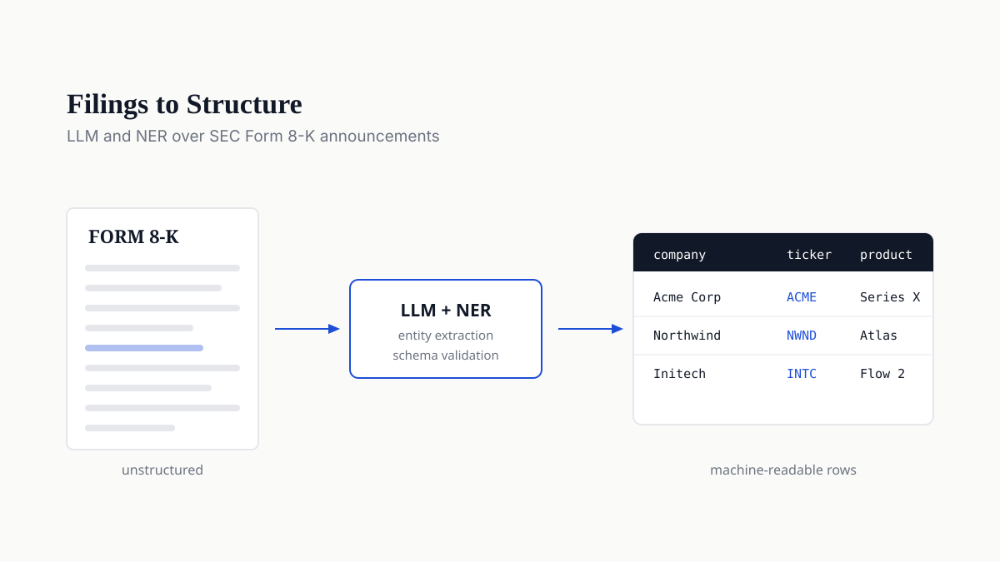

AI Software Engineer
Prachi
Saibewar
I build production AI systems: retrieval-augmented generation, LLM evaluation, and agentic workflows in regulated healthcare and enterprise environments. Recent work: Recall@5 from 76% to 91%, grounded answers from 79% to 92%.
About
I'm an AI Software Engineer with 4+ years of software engineering experience, including production Generative AI, LLM, RAG, and agentic AI systems.
I've built AI-assisted workflows in regulated healthcare and enterprise environments, improving grounded-answer rates from 79% to 92% and retrieval Recall@5 from 76% to 91%, with experience across retrieval, evaluation, backend integration, observability, and production support.
Based in Orlando, FL. Open to remote and relocation, available immediately for AI and backend engineering roles.

Experience
PDF Resume ↗-
Software Engineer
Rokt is an ecommerce technology company operating in the checkout transaction moment. My work sat on the customer data platform side: identity resolution, consent-aware routing, and audience delivery.
- Investigation time down 30% with a Customer 360 identity-resolution workflow in React, TypeScript, C#/.NET REST APIs, AWS S3, and indexed search, letting engineers trace profile merges.
- 300+ native CDP integrations carrying consent-aware data routing and UID2 identity workflows, propagating privacy and preference signals through downstream activation pipelines for GDPR/CCPA-aligned processing.
- 80% and 95% schema-capacity thresholds introduced through production observability in Prometheus, PromQL, and Chronosphere, surfacing ingestion and reliability risks before platform limits were reached.
- Manual operational effort down 80% by automating recurring audience data exchanges over AWS S3 and SFTP, improving reliability of scheduled downstream delivery.
-
AI Engineer
Applied AI inside a regulated healthcare environment, spanning retrieval, evaluation, and clinical data integration under HIPAA controls.
- Recall@5 from 76% to 91% across a 300-query evaluation set, engineering RAG over 10K+ knowledge records with embeddings, chunking, metadata filtering, semantic vector search, and PostgreSQL/pgvector.
- Grounded-answer rate from 79% to 92% through an automated LLM evaluation framework across 300+ queries, iterating on retrieval and prompts.
- 98%+ schema-valid responses and 35% fewer manual corrections from structured-output LLM workflows with prompt and context engineering, validation, guardrails, and human-in-the-loop review.
- p95 processing latency down 35% on event-driven AI and data pipelines in Python, PostgreSQL, AWS S3, and SQS, with retries, logging, failure handling, and diagnostics.
- FHIR R4 and HL7 v2 (ADT/ORU/ORM) integrations for secure exchange of patient and clinical data across EHR systems, with OAuth 2.0 and HIPAA-aligned access controls for PHI.
-
Software Engineer
Three years of enterprise workflow automation and cross-system integration at high volume.
- 20+ production workflows and 40% less manual processing, building reusable enterprise workflow automation and REST integration services in JavaScript from business requirements.
- 15+ internal and third-party systems integrated through REST APIs and asynchronous workflows, with transformation, validation, retries, and exception handling for reliable cross-system data exchange.
- API and workflow latency down 25% by tuning queries and adding caching across high-volume enterprise operations.
Education
M.S. Computer Science, GPA 3.9
B.E. Computer Science
Projects
-

Chartalist.org ↗
Open-science catalogue of machine-learning-ready blockchain graph datasets, published at NeurIPS 2022. I rebuilt the platform off legacy PHP as a React and TypeScript application; it serves labelled UTXO and account-based datasets to researchers worldwide.
-

IncidentIQ ↗
Agentic AI production-support platform: a LangGraph agent running hybrid RAG over Postgres and pgvector, with approval-gated write actions and a 100-scenario evaluation harness.
-

FinAgent Pro ↗
Multi-agent investment research platform that runs market intelligence, fundamental, and technical analysis over real-time data to produce structured stock research.
-

Geo-Enabled POI API ↗
Production-ready Points-of-Interest API with spatial indexing and optimized radius queries, built on Django 5, GeoDjango, and PostgreSQL/PostGIS with an interactive map UI.
-

SEC 8-K Product Extractor ↗
Extracts new product announcements from SEC Form 8-K filings using LLMs and named entity recognition, emitting structured company, ticker, and filing-time records for downstream analysis.
Open Source
-
FDataLab/Chainlet-Orbits #1 ↗
Merged
Transaction ETL tooling for the codebase behind Chainlet Orbits (KDD 2025), converting raw archives into graph edge lists.
-
networkx/networkx #7974 ↗
In review
Adding the AlphaCore data-depth core decomposition algorithm to NetworkX, in review with maintainers.
-
friedhelmvictor/alphacore #3 ↗
In review
Refactor of the reference Python and R implementations from the original AlphaCore paper (KDD 2021).
Skills
- AI & Generative AI
- Generative AI, Machine Learning, LLMs, OpenAI, Vertex AI, RAG, Agentic AI, AI Agents, LangChain, LangGraph, NLP, Prompt & Context Engineering, Embeddings, Vector Search, Semantic Search, Chunking, Structured Outputs, Function/Tool Calling, LLM Evaluation, Retrieval Evaluation, Langfuse, Guardrails, Human-in-the-Loop
- Languages & Backend
- Python, C#, TypeScript, JavaScript, SQL, FastAPI, ASP.NET Core/.NET, Node.js, REST APIs, Microservices, Distributed Systems, System Design, Event-Driven Architecture, OAuth2
- Cloud & Data
- AWS, S3, SQS, PostgreSQL, pgvector, Redis, Docker, CI/CD, Git
- Frontend, Testing & Observability
- React, OpenTelemetry, Prometheus, PromQL, Chronosphere, Jest, Playwright, Postman
Get in Touch
Open to AI Software Engineer opportunities. Email me directly or use the form.